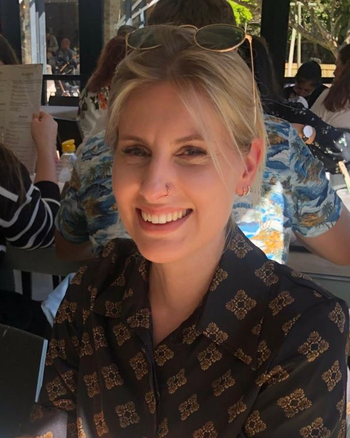

Soumaya Samsodien

Aspiring Web Designer
Summary
Mother of three children, I am looking to come back into the working grounds and redirecting my career path. I am currently studying to become a Web Designer.
Education
2011 - 2012
- internship in special need teaching
Work experience
2014 - 2016
- Teacher for special need children
- Worked in a class of 6 children, each with different disabilities
Skills
- Creativity
- Organization
- Time management
Languages
- French - Mother tongue
- English - C1
- German - B2
- Italian - B1
Hobbies
- acqua scaping
- hiking
- dog training
Contact Me